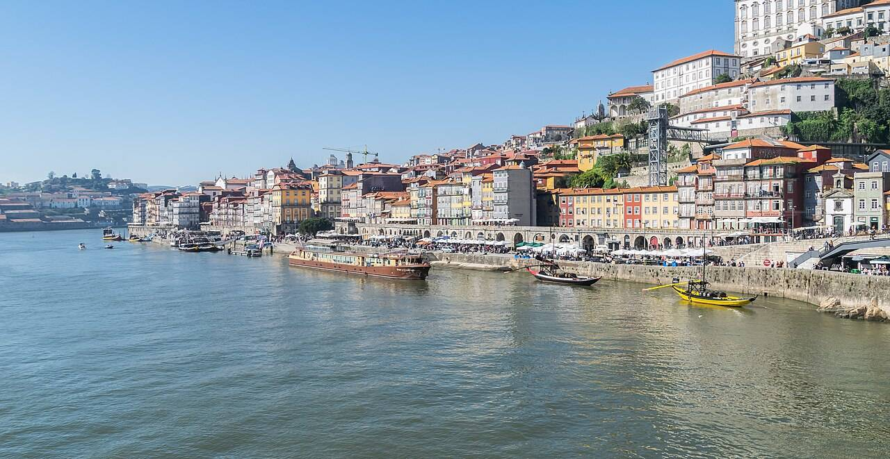

Valentijn aan de Douro: rivierzicht, port en de perfecte vliegtijden
Om 06:30 weg, om 09:00 pastel de nata. Zondag 14 februari pas om 20:50 terug.
Je slaapt in Tivoli Kopke Porto Gaia, met rivierzicht, buitenzwembad en spa aan de portkant van de rivier. Valentijnsdag valt precies in dit weekend.
Gallery



.jpg){kind=link}
Wat het kost
- Vluchten€300
- Hotel, 2 nachten€444,48
- Metro Porto€9,20
- Vaste kosten voor 2 personen€753,68
Voor 2 (schatting). Comfort: porttasting, Six Bridges-boottocht en Valentijnsdiner. Luxury: sterrendiner en spa. Reis van huis naar de vertrekluchthaven is niet meegerekend.
Flights
Rond Valentijn stijgen prijzen vaak; daarom Watching. Porto ligt 1 uur achter.
The Stay
Tivoli Kopke Porto Gaia Hotel
9,2Design-hotel aan de Gaia-oever, vernoemd naar portmerk Kopke. Buitenzwembad, spa, 3 restaurants en uitzicht op de Ribeira.
- Deluxe Room met rivierzicht, 27 m², zonder ontbijt (€25 extra)
- €444,48 voor 2 nachten, 2 personen · €408 + 6% btw + €3 toeristenbelasting p.p.p.n.
- Gratis annuleren tot 5 feb 2027, betalen in het hotel
- Check-in vanaf 15:00, check-out tot 12:00
€1.042,32 voor 2 incl. ontbijt, btw en toeristenbelasting, gratis annuleren tot 10 feb. Bijna €600 meer. Bekijk op Booking.com
Getting there
- Luchthaven Porto: metro lijn E, €2,30 p.p. (Andante Z4), daarna lopen over de Dom Luís-brug
- Landing 08:15, check-in vanaf 15:00: bagage droppen en de stad in. Check-out 12:00, vlucht 20:50: middag aan de rivier.
Het weekend
- Vrijdag
Ribeira en Lello
08:15 landen, ontbijt in de stad, Ribeira, Livraria Lello, check-in 15:00, zonsondergang in Jardim do Morro.
- Zaterdag 13 feb
Port en Foz
Porttasting in de kelders van Gaia, tram 1 naar Foz aan de oceaan, romantisch diner.
- Zondag 14 feb
Valentijn
Brunch, boottocht langs de bruggen, middag spa en zwembad, 18:30 naar de luchthaven.
Pablo-score 8,3
- Prijs-kwaliteit 25%8,5
- Hotel 25%8,5
- Bestemming 20%8,5
- Reisgemak 15%8,0
- Activiteiten 10%8,0
- Uniek 5%7,0
Sterk
- Perfecte vliegtijden: vroeg heen, laat terug
- Rivierzicht en spa voor €222 per nacht
- Valentijnsdag valt in het weekend
Minder sterk
- Februari kan nat zijn
- Vlucht heen al om 06:30
- Vertrek op vrijdagochtend
Mooiste romantische weekend van de editie. Boek vroeg, Valentijn loopt vol.PabloAlle gedeelde trips